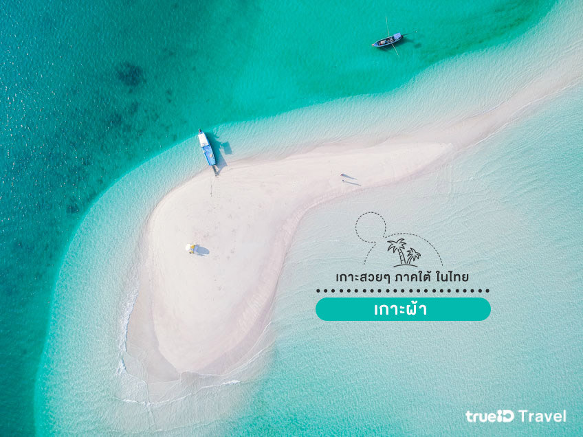
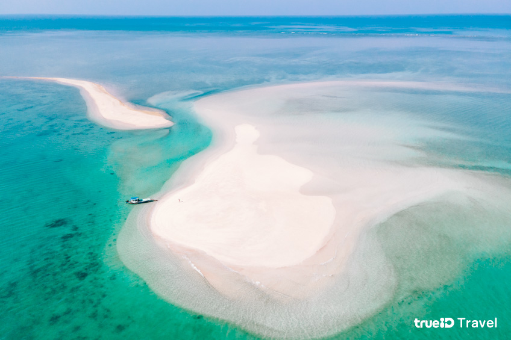

เกาะผ้า พังงา
เกาะผ้า เป็นเกาะเล็กๆที่ตั้งอยู่ใน ตำบลเกาะคอเขา อำเภอตะกั่วป่า จังหวัดพังงา ที่นี่มีความพิเศษมากๆ ด้วยความที่มีลักษณะคล้ายกับทะเลแหวก เราจะสามารถเห็นพื้นทรายได้แค่ตอนที่น้ำทะเลลดต่ำลงเท่านั้น สันทรายของเกาะถึงจะโผล่พ้นน้ำขึ้นมา เป็นช่วงเวลาเดียวที่เราจะสามารถนั่งเรือมาเที่ยวชมกันได้ แต่ในช่วงที่น้ำลดถ้ายังไม่ลงสุดก็จะเห็นเป็นเกาะเล็กๆถึงสามเกาะด้วยกัน แต่พอน้ำลงต่ำสุดก็จะกลายเป็นเกาะเดียว ยาวเกือบ 1 ตารางกิโลเมตรเลย น้ำใสสวยปิ๊ง ต้องมาเช็คอินสักครั้ง
